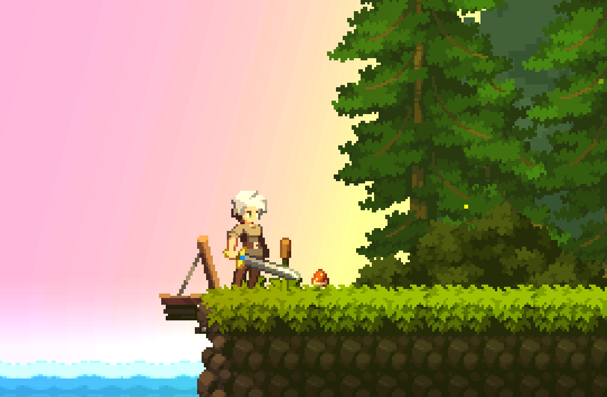

La Balade est un projet principalement contemplatif dans lequel nous nous promenons dans une forêt encheteresse afin de porter un message.
Le projet a vu le jour suite à un exercice de cours qui consitait à récupérer le level design d'une personne et de l'interpréter.
J'ai utilisé ce projet comme test pour apprendre beaucoup de nouvelles compétences comme les animations 2D, l'utilisation des tilemaps, le fonctionnement des particules et enfin la mise en place de lumière à l'aide de l'URP 2D de Unity. J'ai ainsi pu expérimenté de nombreuses choses qui m'a permis une grande prise en expérience pour le travail à réalisé pour "Ninja Run Duel", mon plus grand projet 2D réalisé sur Unity.
Les mécaniques du projet était très simple, ici je m'étais vraiment concentré sur l'estitique du jeu avec un travail acharné pour pouvoir proposer ce projet. Un travail qui a été très bénéfique pour les projets suivants. Ce projet fait partie de ceux qui m'ont permis d'apprendre énormémement en très peu de temps.
jeffrey.zu@ludus-academie.com
06 37 49 66 67